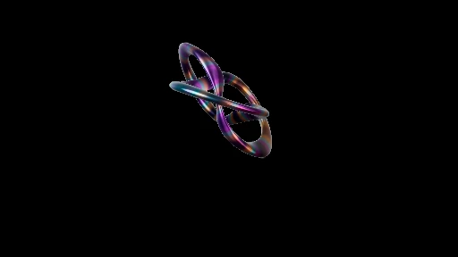
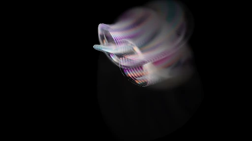
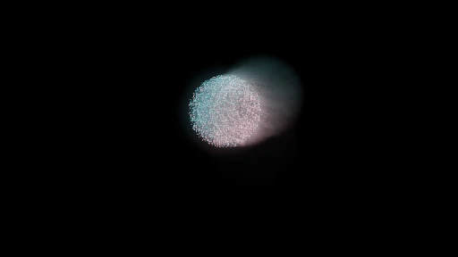

Impronte luminose
I riflessi sopra soglia lasciano tracce colorate. Le tracce sbiadiscono con il tempo e si schiariscono dove si sovrappongono.
Confronto

Scena di partenza

Solo impronte

Impronte su Particelle
Vai a Filtri → Persistenza → Impronte luminose. La soglia seleziona i riflessi. Il dimezzamento regola la durata delle tracce in secondi. L’accumulo regola quanto si schiariscono quando passano nello stesso punto.